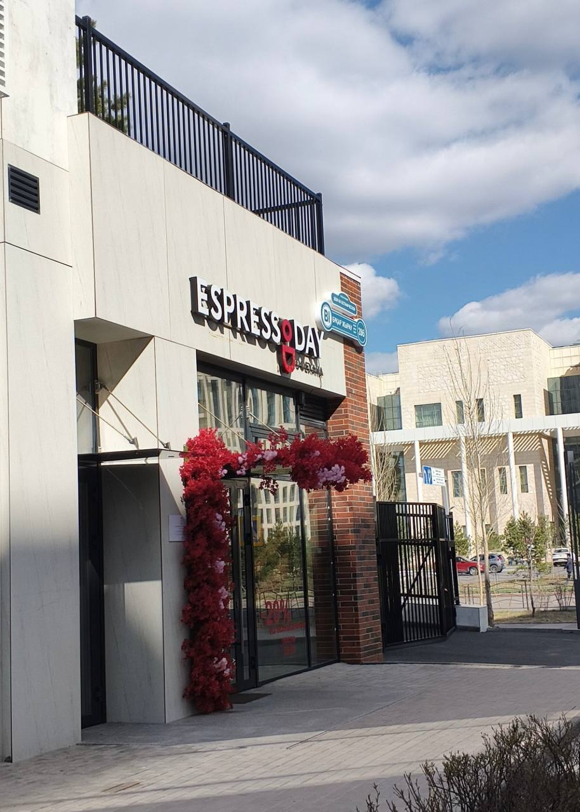

Welcome to Espresso Day
 Espresso Day is a coffee shop chain in Astana, Kazakhstan, with 112 branches across the country. It's a comfortable spot for coffee, dessert, a quick take away order, or a longer stay to study or work.
Espresso Day is a coffee shop chain in Astana, Kazakhstan, with 112 branches across the country. It's a comfortable spot for coffee, dessert, a quick take away order, or a longer stay to study or work.
Take a look at the coffee menu or go straight to reserve a table.
Why Espresso Day
- Coffee, lemonades, ice matcha and desserts
- Take away format, ready in a few minutes
- A power socket at every table
- Interior with elements of Kazakh style
- Espressoday app — order ahead and get 10% cashback
- 112 branches across Kazakhstan
